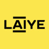

About Me
Hi, I'm Dennie, a results-oriented developer with a keen interest in process automation and database systems.
With over a year of experience in commercial RPA projects, I have a proven track record of successful deliveries for government agencies and financial institutions. My expertise extends to database systems, where I excel in implementation, optimization, application design, and administration.
Feel free to connect or reach out! ( :D)
What I'm Doing
-
Robotic Process Automation
Development of RPA solutions at the professional level.
Relevant Skills
- Strong proficiency in Laiye RPA (Commander, Worker, Creator) with industry experience and certification.
- Fundamental knowledge of major RPA tools, including Automation Anywhere, UiPath, and Power Automate, backed by certification.
- Hands-on experience with on-premise installation in highly secured environments.
- Skilled in working with various data formats such as JSON, XML, HTML, and CSV.
- In-depth understanding of RPA concepts, products, trends, values, best practices, design patterns, frameworks, and error management.
- Proven experience in automation, workflow optimisation, and process reengineering.
- Proficiency in databases (SQLite, MySQL, PostgreSQL), data query languages (SQL, PL/SQL), and scripting languages (Python, Shell).
- Experience in data analysis and data cleansing.
- Proficiency in Microsoft Excel, including advanced formulas and pivot tables.
- Experience in project management with a successful track record of delivering projects for large agencies.
- Experience in both frontend and backend development.

-
Database Systems
Equipped with the knowledge in database optimisation, design and administration.
Relevant Skills
- Proficiency in databases (SQLite, MySQL, PostgreSQL), data query languages (SQL, PL/SQL), and scripting languages (Python, Shell).
- Strong understanding of relational theory, normalization, and ER diagram design.
- Strong expertise in data mapping using SQL joins, groups, CTEs, window functions, nested queries, and correlated subqueries.
- In-depth knowledge of practical aspects of database construction, including integrity constraints, data types, storage engines, character encoding, and data export / import.
- Proficiency in query optimization and performance tuning, with experience using SQL Profiler to analyze execution plans.
- Familiar with database internals and implementation details.
- Hands-on experience with stored procedure development using PL/SQL.
- Proven experience in writing Shell scripts for automating daily backups of large databases.
- Skilled in building databases based on requirements, as well as data analysis and cleansing using SQL.
- Hands-on experience in database migration, backup, restore, and recovery procedures.
- Experience in database installation, configuration, and indexing.


-
Web Development
Development of web applications with a focus on backend.
Relevant Skills
- Work in progress.


Recommendations
-
Sunny Ho
Managing Director üìå Hong Kong
Founder @ IT-Partners Limited (Sunny was Dennie's supervisor)Dennie is one of the most outstanding young graduates I have encountered. During his one year with us, he quickly became a competent manager and an exemplary employee.
From our first meeting, I was impressed by Dennie's well-rounded abilities. Shortly after joining the company, he demonstrated exceptional programming and problem-solving skills. He proactively took on the task of maintaining and revamping the company's internal resource planning system, delivering remarkable results. When the company decided to launch its RPA business, Dennie swiftly mastered the necessary skills and led a special task force to successfully complete multiple projects. His work ethic and team management skills were widely praised by his peers.
Dennie's achievements are a testament to both the opportunities provided by the company and his hard work and dedication. For these reasons, I have the utmost confidence in Dennie's potential to excel in any endeavor he chooses to pursue.
View Reference Letter
-
Eric Li
Sales Director üìå Hong Kong
General Manager @ IT-Partners Limited (Eric was Dennie's supervisor)Dennie was one of the most capable individuals I have encountered.
During his one year with us, he led the documentation of our critical in-house procedures, proposed and enhanced our resource planning system, and played a key role in establishing our first RPA task force and multinational remote team. Additionally, Dennie helped secure a major client for pilot RPA projects and successfully led a team of four to implement several significant RPA projects and deployments. His proactive attitude and strong technical skills enabled him to advance quickly.
Beyond his professional abilities, Dennie was also an outstanding team player and leader. He built positive relationships not only within his team but also across various departments. His decisiveness, supportive nature, and friendly demeanor made him a respected and sought-after consultant among his peers.
For all these reasons, I am confident that Dennie has the potential to excel in any path he chooses.
View Reference Letter
-
Eric Lau
Software Engineer üìå Hong Kong
RPA Developer @ IT-Partners Limited (Dennie was Eric's supervisor)Dennie is an accomplished team leader with exceptional expertise in robotic process automation. He has a extensive experience with various RPA tools and is always eager to learn about new technologies.
One of his greatest strengths is his ability to mentor and guide his team members. Dennie is always willing to share his knowledge and provide support to anyone who needs it. He is patient, approachable, and has a talent for explaining complex concepts in a way that is easy to understand.
Dennie's technical writing skills are equally impressive. He has a knack for breaking down complex technical concepts into clear, easy-to-understand language. This skill is particularly evident in the two technical sharing sessions he hosted for our clients, both of which received high praise for their clarity and practicality.
Dennie's project management abilities are also second to none. When our previous project manager left, he seamlessly stepped into the role, demonstrating excellent leadership, communication, and problem-solving skills. He ensured that the project was completed on time and within budget.
Overall, Dennie is a highly skilled and talented team leader with a wealth of technical knowledge and outstanding project management skills. Any team would be fortunate to have him, and I highly recommend him without reservation.
View Linkedin
-
Chin Yeow Leang
Senior Software Engineer üìå Kuala Lumpur
Founder @ LeangHosting (Dennie was Chin's client)Dennie has been a highly trustworthy and reputable client of mine at LeangHosting. He possesses a broad range of expertise in IT systems, along with strong management, direction, and leadership skills that have helped create a thriving community where people truly enjoy themselves.
As a talented IT systems engineer, Dennie has provided us with invaluable recommendations that have significantly improved our services. For instance, his advice on network configurations has been instrumental in defending against large-scale DDoS and bot attacks. Working with him is always a pleasure, and we deeply appreciate the in-depth research and insights he brings to the table.
Dennie's leadership in building and managing BattleAsya is nothing short of inspiring. He grew the community from just 10 members to over a thousand daily users. His vision and innovation have motivated us to keep pushing forward, and we're excited to support him as his community continues to grow into a large family.
We feel incredibly fortunate to have had Dennie as one of our earliest clients. We've learned countless new things from him, and his passion and dedication have fueled our own growth and enthusiasm for what we do.
Highly recommended—Dennie is both talented and a true asset to any project!
View Linkedin
-
Eugene Ewe
Cyber Security Engineer üìå Singapore
Co-Founder @ BattleAsya (Dennie was Eugene's colleague)I first met Dennie in 2016 when we were still high school students. We discovered our shared interest in Minecraft game servers and immediately set our plans into motion. That's how BattleAsya was founded. It was truly a pleasure to learn, develop, and manage our server under Dennie's guidance.
Dennie is an inspiring, charismatic, and great leader. Under his leadership, BattleAsya became one of the most popular Minecraft servers in Southeast Asia. The success of BattleAsya wouldn't have been possible without Dennie's dedication and commitment.
I wholeheartedly recommend Dennie.
View Linkedin
Daniel lewis
CEO